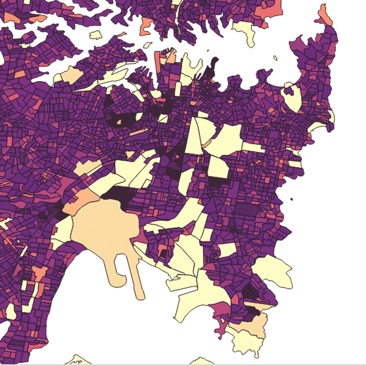

-
Data journalism
Data journalism is a journalism specialty reflecting the increased role that numerical data is used in the production and distribution of information in the digital era. It reflects the increased interaction between content producers (journalist) and several other fields such as design, computer science and statistics. (En.wikipedia.org, 2018)
person total income/female total income/male total income(weekly,2016)
read more→